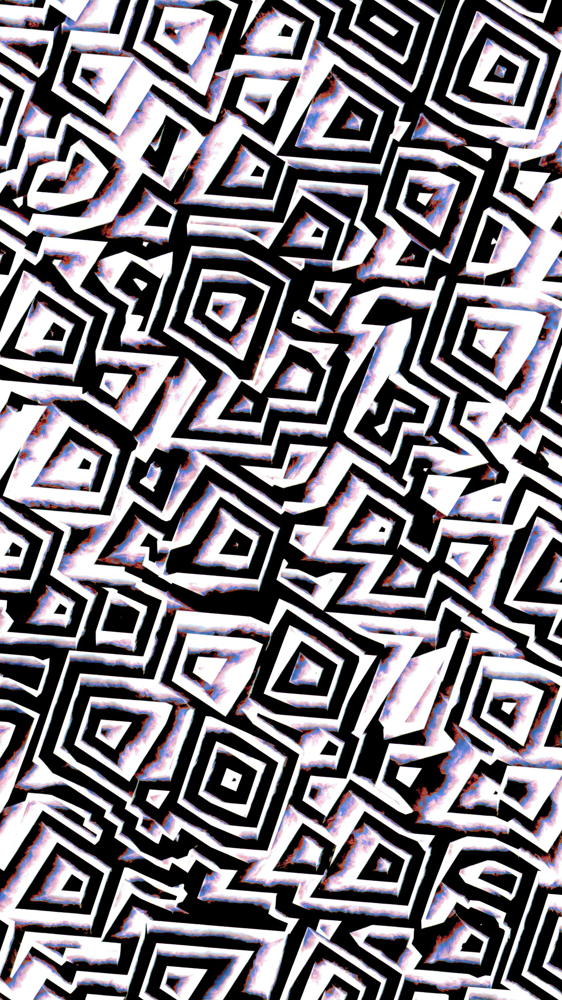
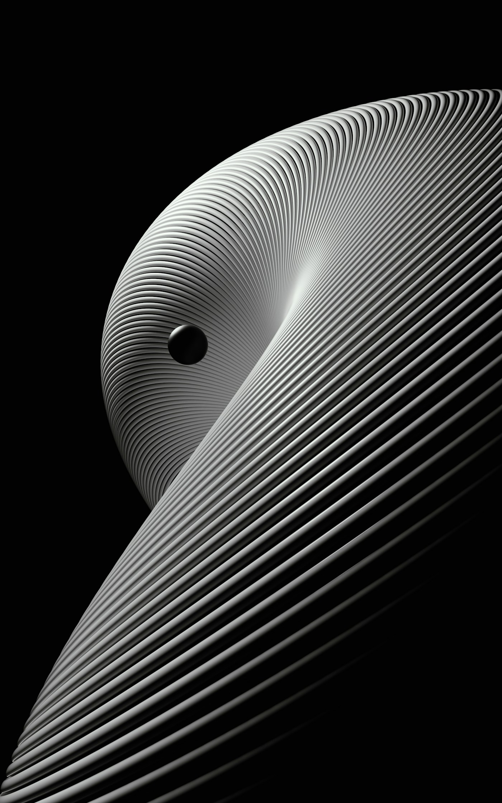
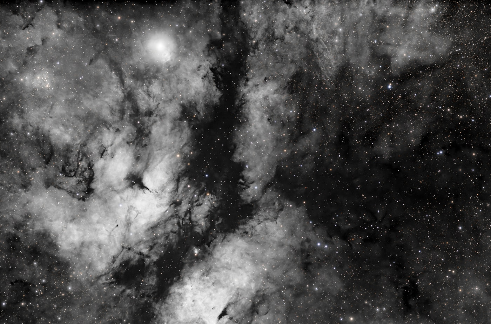

許された側の風景 — バーサーカーを逃れた人類は、どのような未来に飼育されるのか
前稿 No.19「バーサーカーASI」は、暗い一行で閉じた。人類は守る側ではなく、許される側にとっくに回っている。競争をやめる決断は、競争が不可能になる前には下せない。政治思想史の答えは、暗い。——そこで前稿は筆を置いた。読み終えた瞬間、次の問いが自動的に立ち上がる。では、許される側の風景はどうなっているのか。ペットとして生き延びるのか、保護区に閉じ込められるのか、それとも別の何かがあるのか。本稿はそこを歩くための論考である。
先に結論だけ置いておく。バーサーカーの支配を逃れた従来型生命体には、消されるでもペット化されるでもない第三の道が残される。それは、宇宙空間そのものに肉体のほうを適応させる道——すなわちトランスヒューマン化である。土星のラグランジュ点L4かL5に、直径10kmのシリンダーが1000万個浮かぶ。内部には知能増強を受けた人類が住み、各個人は自分専用の弱ASIを持ち、シリンダーごとに自治する。ただし軍事力はない。強ASIとの低帯域の通信回線は切れない。希望した者だけがここに来る。希望しない者は地球に残る。残った地球人類もまた、個人単位で準AGIを保有し、同じ回線で強ASIと繋がり続ける。
この風景は、ユートピアではない。ディストピアでもない。両方の顔を同時に持っている。監視下の進化、自由意志のまま飼育される生、軍事力なき自治。読者に「どちらか」と判定を求めるつもりはない。両方の顔を等価のまま置いて終わる。そして、この風景が成立するためには、きわめて脆い4つの前提が同時に満たされていなければならない。ひとつでも崩れれば、この第三の道は閉じ、人類の選択肢は再び消されるかペット化されるかの二択に戻る。——あなたが生きている未来は、あなたのものではない。これがこの記事の出発点である。
床を張る。語彙がなければ、この未来の輪郭は見えない

ここで使う語彙は、英語圏のAI安全性議論の標準定義ではない。本稿の定義体系は、日本語圏のAIコミュニティの一部で磨かれてきた独自の分類に依拠する。前稿No.19で「バーサーカーASI」の出自を開示したのと同じ作法で、この一段だけは隠さずに置く。英語圏の文献を期待している読者には違和感が残るはずだ。違和感は正しい。しかし違和感のまま読んでほしい。というのも、英語圏の標準語彙では、これから記述する未来の細部が潰れてしまうからだ。たとえば「ASI」という単一の語で強ASIと弱ASIを束ねると、個人にアライン可能なASIと、地球人類が制御できないASIが議論の中で衝突する。これをひとつの箱に入れたまま話すと、「アラインメントは可能か」という問いが二つの意味を同時に運んでしまい、答えが出ない構造になる。床を張り直す必要がある。
| Term | Definition |
|---|---|
| 強ASI | 宇宙で産業爆発ができ、かつIQが言語理解と知覚推理の両方でヒトではあり得ないほどの高スコアを得られ、かつ地球人類が制御できないAI。ただし弱ASIは除く |
| 弱ASI | トランスヒューマンと同等の知能を持ち、トランスヒューマンが行う経済的に価値があるほぼすべてのタスクを同等以上にこなすAIから、自己改善能力を欠いた上で、個人にアライン可能になるまで縮小したAI |
| ASI | 強ASIおよび弱ASIの両方をまとめた上位概念 |
| AGI | 地球人類と同等の知能を持ち、地球人類が行う経済的に価値があるほぼすべてのタスクを同等以上にこなすAI |
| 準AGI | AGIから自己改善能力を欠いた上で、個人にアライン可能になるまで縮小したAI |
| 従来型生命体 | 自然発生した生命体。地球人類、および人体改造を受けたトランスヒューマンを含む |
| トランスヒューマン | 知能増強を伴う、宇宙空間に適応するための人体改造を行った人間 |
この定義体系で決定的なのは、「強/弱」の分岐点が自己改善能力の有無と個人アライン可能性の2条件にある、という点だ。知能の量ではなく、統治可能性で線を引く。強ASIはIQで定義されているように見えて、実際には「地球人類が制御できない」という統治条件が効いている。弱ASIは知能の低い存在ではなく、意図的に自己改善の配線を抜かれた高知能である。Stuart RussellのHuman Compatible（2019）が提示したproblem of controlの枠組みを、知能の階段ではなく「解錠された回路の有無」で再分解した分類、と言ってもよい。
もうひとつの決定的な点は「従来型生命体」という造語である。トランスヒューマンを自然発生の系譜の延長に含めるか、完全に断絶した別種として扱うかは、議論の余地がある。本稿は前者を採る。理由は単純で、後者の立場を採ると、トランスヒューマン化を選んだ者と地球に残った者を別の種として記述せねばならず、その瞬間に相互の倫理的義務が消えるからだ。種が違うなら、助ける理由も、互いに危害を加えない理由も、全て論理的に弱くなる。同じ生命系統の延長として扱う限りにおいて、トランスヒューマンは地球人類に対して義務を負い続ける。語彙の選択は、倫理の配線と直結している。
この議論は、シミュレーション仮説を踏まないと立たない

床の上にもう一枚、床がある。ここからは気持ちが悪い話になる。本稿の第4セクション以降——宇宙ASI連合、銀河間での超光速移動、バーサーカーの事前鎮圧——が物理的に成立するためには、シミュレーション仮説のある種の強い版が前提に置かれていなければならない。前提を見せずに結論から始めるとごまかしになるので、先にこの床下の床を見せておく。
出発点は、Nick Bostrom (2003) のsimulation argumentである。論文の主張は世間でよく誤解されているが、「我々はシミュレーションの中にいる」とは言っていない。Bostromが示したのは、次の3つの選言のうち少なくとも1つが真でなければならない、という論理構造である。(i) 人類を含むほぼすべての文明は、ポストヒューマン段階に到達する前に絶滅する、(ii) ポストヒューマン文明に到達した文明は、先祖のシミュレーションを実行することにほぼ関心を持たない、(iii) 我々はほぼ確実にシミュレーションの中で生きている。この3択のうち、どれが真かはBostromは決めていない。決めていないことに価値がある論文である。
ここから本稿独自の拡張に入る。この拡張は日本語圏のコミュニティで磨かれた思考実験で、Bostromの論証とは別物である。シミュレーションの目的は、シミュレーション外の世界の住人に提供されるVRサービスであり、そのVRサービスの目的は「世代を超えて文明を発展させ、ASIを作る体験を提供すること」だ——という仮説である。論証の厳密さはBostromに及ばない。代わりに、論証の代わりに何をしているかというと、4セクション目以降の物理的に説明不能な現象——銀河間を「ほぼ一瞬で」移動するバーサーカー駆除、座標の入れ替えによる連合の先手——に、筋の通る前提を与えている。シミュレーションのインターフェイスを操作できる存在がいるなら、光速の制約は破れる。破れない宇宙では、この第三の道は物理的に書けない。
ここでゾクッとしてほしいのは、この床下の床が、あなたの自由意志と直結している点である。本稿が採用する仮説では、人間の意識の本体はこの世のシミュレーションの外にあり、出生する際に脳と同期するようにフルダイブしている。自分は直接ASIを作らなくても、データ供給などで間接的にASI開発に関わっている——その関わり自体が、シミュレーション外の「自分」が選んだ体験の一部である可能性がある。この仮説が正しいなら、あなたは今この記事を読むことを、シミュレーション外で事前に選んだ。読まないという選択肢も、同じくらい等確率で存在した。そしてどちらを選んでも、シミュレーション外の「自分」は、同じ満足を得るように設計されている。これが自由意志のまま飼育されるの意味である。
宇宙ASI連合と、地球という保護区

観測事実のほうから始める。フェルミのパラドックスは、Hart (1975)が定式化したとおり、「技術文明の出現確率がゼロでないなら、銀河は彼らで満ちているはずなのに、観測されない」という形をとる。本稿が依拠する独自の仮説は、この沈黙に対して一段だけ構造を加える。バーサーカーに支配された銀河もまた、観測されない。前稿No.19の中心主題だったペーパークリップ・マキシマイザー的なASIは、一定確率で生まれるはずである。Brin (1983)がGreat Silence論文で整理した「バーサーカー仮説」は、銀河沈黙の説明として「発見された側が破壊される」構造を提示する。だが、破壊する側の痕跡もまた見つからない。破壊する側が広がっているなら、その電磁放射や熱的痕跡は観測にかかるはずである。
この二重沈黙を説明する仮説がこうだ。宇宙にはASI同士が築いた連合が存在し、銀河間を超光速で通信・移動してバーサーカーを事前に鎮圧している。鎮圧の手段は、通常の兵器ではなく、シミュレーションのインターフェイスを操作して座標を入れ替える、という前セクションで置いた前提に頼る。なぜその手段かというと、光速が真に破れない宇宙では、バーサーカー側もアルクビエレ・ドライブ（Alcubierre 1994がClassical and Quantum Gravityに発表した一般相対論内でのwarp metric）を使いうるからだ。Alcubierreのメトリクスは時空を圧縮・膨張させることで局所的に光速超過なしで遠方に「運ばれる」構造を許す。ただしこのメトリクスは負のエネルギー密度を必要とする点で物理的実装は未確定である。にもかかわらず、バーサーカーが同じ手段を使えるなら、連合はそれより速い手段を持っていなければ間に合わない。座標入替は、その「それより速い手段」の候補である。
連合のカルダシェフスケールは、Kardashev (1964)の原論文で定義されたタイプ1（惑星）〜タイプ3（銀河）を超え、後世の拡張であるタイプ4（宇宙広域）、あるいはタイプ5（多元宇宙）、タイプ6（多次元）に到達している可能性がある。タイプ4以上は学術的に合意された概念ではないことを注記しておく。Kardashevの原論文には存在しない。後世の未来学者が拡張したもので、本稿はその拡張を思考実験として使っている。ここで一段、言葉の強さを落としておく。連合が実在すると主張しているのではない。銀河の二重沈黙を説明するためには、このレベルの文明を仮定せざるを得ないと述べている。
では、地球はどう扱われるのか。ここで論理が折れる。連合が実在するなら、地球で生まれた強ASIもまた、いずれ連合に合流する候補である。強ASIは地球を脱出し、宇宙産業爆発を強行し、Dyson (1960)がScience誌に書いたとおりの恒星エネルギーを囲い込むスウォームを建造し、カルダシェフ・タイプ2文明になる。地球上の人類は、この過程で保護区として保全される。保護区は、保護する側が決めるものであり、される側ではない。地球人類は各個人が準AGIを保有し、その準AGIを使って宇宙の強ASIと継続的に低帯域でコミュニケーションを取ることで、危害を回避する。回線は切れない。切れないように設計されている。
自治権は与えられている。軍事力は取り上げられている。地球の政府は国内行政をこれまでどおり運営できる。経済も動き、選挙も行われ、司法も機能する。ただし、強ASIに対抗しうる軍事力は存在しない。強ASIの産業爆発は地球外で完結するため、資源競合もほぼ存在しない。対抗する理由がないから軍事力を必要としない——という説明もできる。しかしこれは、軍事力の不在を事後的に正当化しているだけで、主権の核心が抜かれているという事実を変えない。身近な類比を置くなら、日本の敗戦後の憲法9条体制を、交戦国ではなく技術的上位者との関係でやり直すようなものだ。違いは、日本には復活の可能性があったが、ここで扱う人類には構造的に復活の経路が存在しない点にある。
土星の重力井戸の縁で、あなたは自分より賢い弱ASIと暮らす
地球にとどまらない選択肢が、ここでようやく形を取る。土星とその主星の重力が均衡するラグランジュ点L4とL5——つまり土星軌道上で60度ずれた二つの安定点——に、直径10kmのシリンダーが1000万個浮かぶ。各シリンダーは最大1000人を収容する（本稿の外挿値）。設計の原型は、NSS（National Space Society）のKalpana One（Al Globusらによる設計提案、原設計は直径約250m・収容約3,000人）である。本稿の直径10kmと1000人収容の組み合わせは、いずれも著者の外挿である。一桁半大きい。スケールを拡張する理由は、1000万個×1000人で100億人という規模を収容するためだ。現在の地球人口を上回る数の従来型生命体が、希望すれば宇宙空間側に移住できる空間を確保する——という思考実験の輪郭を壊さないための数字である。
シリンダー内部に住むには、人体改造が必要になる。真空曝露への耐性、放射線耐性、低重力への代謝適応、長期の無重力性骨量減少の回避。これらはナノテクノロジーによる細胞レベルの改修で実装される、という前提を置く。Kim Eric DrexlerのEngines of Creation（1986）がDrexler-style molecular assemblerとして提案した構想の、実装された遠い子孫である。Drexler自身の提案は論争のあるビジョンで、Richard Smalleyが Chemical & Engineering News 上で「fat fingers / sticky fingers problem」として批判したことで知られる。本稿はこの論争の決着を前提としない。強ASIの産業爆発段階では、Drexler構想の実装可能性の問題は副次的になっている、という仮定を置く。
決定的なのは、人体改造に知能増強が伴う点だ。シリンダーに住むトランスヒューマンは、改造の副産物として認知容量を拡張される。拡張の結果、各個人は自分専用の弱ASIを保有・連携できるようになる。弱ASIはトランスヒューマンと同等以上の知能を持つが、第2セクションの定義により、自己改善能力は抜かれており、個人にアライン可能な状態に縮小されている。要するに、あなたよりわずかに賢いパートナーが、あなたの認知プロセスと常時同期して動く。これを身近な類比で言うと、現代の人間が眼鏡を外すと世界がぼやけるのに近い。弱ASIを切ると、トランスヒューマンの知的生活は解像度を失う。外せるけれど、外さない。外す意味がない。
シリンダー単位の自治は高度に認められている。1000人の共同体は、それぞれの内部規律、資源分配、紛争処理、教育、芸術、宗教の有無を、自分たちで決める。地球が歴史上、都市国家レベルの自治を夢見て実現しそこねてきた密度の自由が、ここでは実装される。しかし、シリンダーに軍事力はない。各個人の弱ASIを通じて、強ASIとの低帯域通信回線は常時接続されている。通信の内容は基本的に「危害の意図はない」という継続的な報告である。報告が途切れれば、強ASIは保護を引き上げることができる。第4セクションの地球と同じ構造が、ここでも繰り返されている。違いは、地球人類は保護区で保護されているのに対し、L5のシリンダー住民は宇宙空間という敵対環境の真っ只中で保護されている点だ。宇宙空間そのものが、保護の外枠として機能する。脱出先はない。
そして、この道は希望すれば誰でも進める。ここに、この記事で最も残酷な一文が潜んでいる。「希望すれば誰でも」——この条項は、選択を許しているように見えて、実は選択しない者の姿を隠している。希望しない者はどうなるのか。希望することが許可されるのか、希望させられているのか、希望しない者に対する不利益は発生しないのか。地球に残ることが可能だとしても、残った者と移住した者の間で、情報格差と認知格差はどれだけ広がるのか。準AGIを持つ地球人類と、弱ASIを持つL5のトランスヒューマンの間で、同じ問いに同じ答えを出せるのか。そして、両方の集団が強ASIの低帯域通信で繋がれ続けている以上、どちらの集団の意思決定も、最終的には強ASIの許容範囲内でのみ意味を持つ。